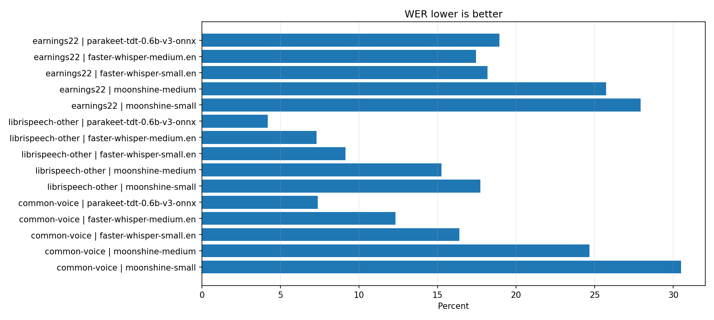
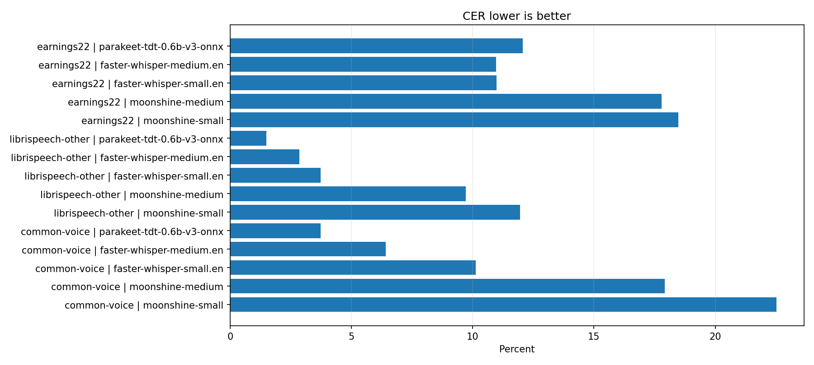
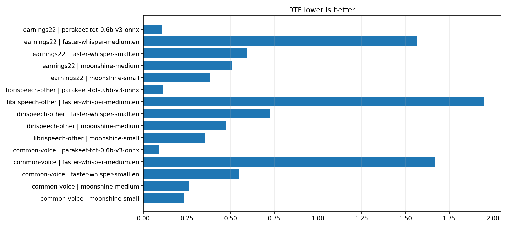
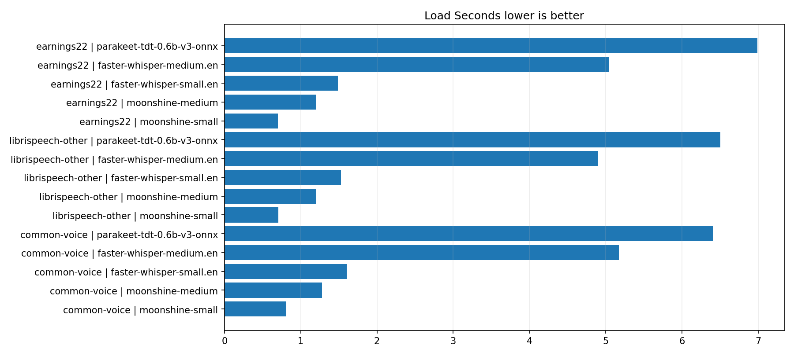
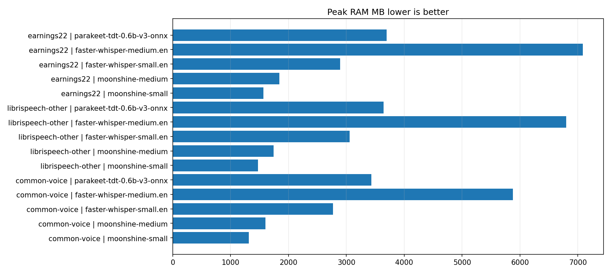

Separate dataset reports are in subfolders. This page combines all completed rows.





| Dataset | Model | Engine | Status | Device | WER | CER | RTF | Peak RAM MB | Error |
|---|---|---|---|---|---|---|---|---|---|
| common-voice | moonshine-small | Moonshine streaming runtime | ok | cpu | 30.50% | 22.53% | 0.23 | 1317.49 | |
| common-voice | moonshine-medium | Moonshine streaming runtime | ok | cpu | 24.65% | 17.92% | 0.26 | 1603.21 | |
| common-voice | faster-whisper-small.en | CTranslate2 via faster-whisper | ok | cpu:float32 | 16.39% | 10.12% | 0.55 | 2766.97 | |
| common-voice | faster-whisper-medium.en | CTranslate2 via faster-whisper | ok | cpu:float32 | 12.33% | 6.42% | 1.67 | 5875.56 | |
| common-voice | faster-whisper-large-v3-turbo | CTranslate2 via faster-whisper | skipped | 918.28 | Skipped by default because this model is unsafe when CUDA/cuBLAS is not confirmed. Rerun with --allow-large after CUDA is fixed. | ||||
| common-voice | parakeet-tdt-0.6b-v3-onnx | ONNX Runtime via onnx-asr | ok | cpu:onnxruntime | 7.37% | 3.73% | 0.09 | 3432.03 | |
| librispeech-other | moonshine-small | Moonshine streaming runtime | ok | cpu | 17.73% | 11.95% | 0.35 | 1471.55 | |
| librispeech-other | moonshine-medium | Moonshine streaming runtime | ok | cpu | 15.25% | 9.72% | 0.47 | 1742.33 | |
| librispeech-other | faster-whisper-small.en | CTranslate2 via faster-whisper | ok | cpu:float32 | 9.15% | 3.73% | 0.73 | 3058.21 | |
| librispeech-other | faster-whisper-medium.en | CTranslate2 via faster-whisper | ok | cpu:float32 | 7.31% | 2.85% | 1.95 | 6798.55 | |
| librispeech-other | faster-whisper-large-v3-turbo | CTranslate2 via faster-whisper | skipped | 928.85 | Skipped by default because this model is unsafe when CUDA/cuBLAS is not confirmed. Rerun with --allow-large after CUDA is fixed. | ||||
| librispeech-other | parakeet-tdt-0.6b-v3-onnx | ONNX Runtime via onnx-asr | ok | cpu:onnxruntime | 4.19% | 1.50% | 0.11 | 3643.16 | |
| earnings22 | moonshine-small | Moonshine streaming runtime | ok | cpu | 27.93% | 18.48% | 0.38 | 1565.39 | |
| earnings22 | moonshine-medium | Moonshine streaming runtime | ok | cpu | 25.73% | 17.78% | 0.51 | 1842.77 | |
| earnings22 | faster-whisper-small.en | CTranslate2 via faster-whisper | ok | cpu:float32 | 18.16% | 10.98% | 0.59 | 2889.33 | |
| earnings22 | faster-whisper-medium.en | CTranslate2 via faster-whisper | ok | cpu:float32 | 17.45% | 10.97% | 1.57 | 7085.84 | |
| earnings22 | faster-whisper-large-v3-turbo | CTranslate2 via faster-whisper | skipped | 1014.77 | Skipped by default because this model is unsafe when CUDA/cuBLAS is not confirmed. Rerun with --allow-large after CUDA is fixed. | ||||
| earnings22 | parakeet-tdt-0.6b-v3-onnx | ONNX Runtime via onnx-asr | ok | cpu:onnxruntime | 18.94% | 12.06% | 0.10 | 3695.16 |